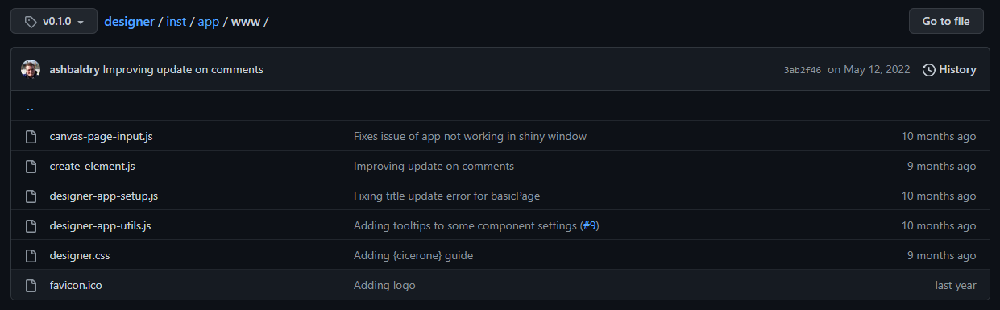
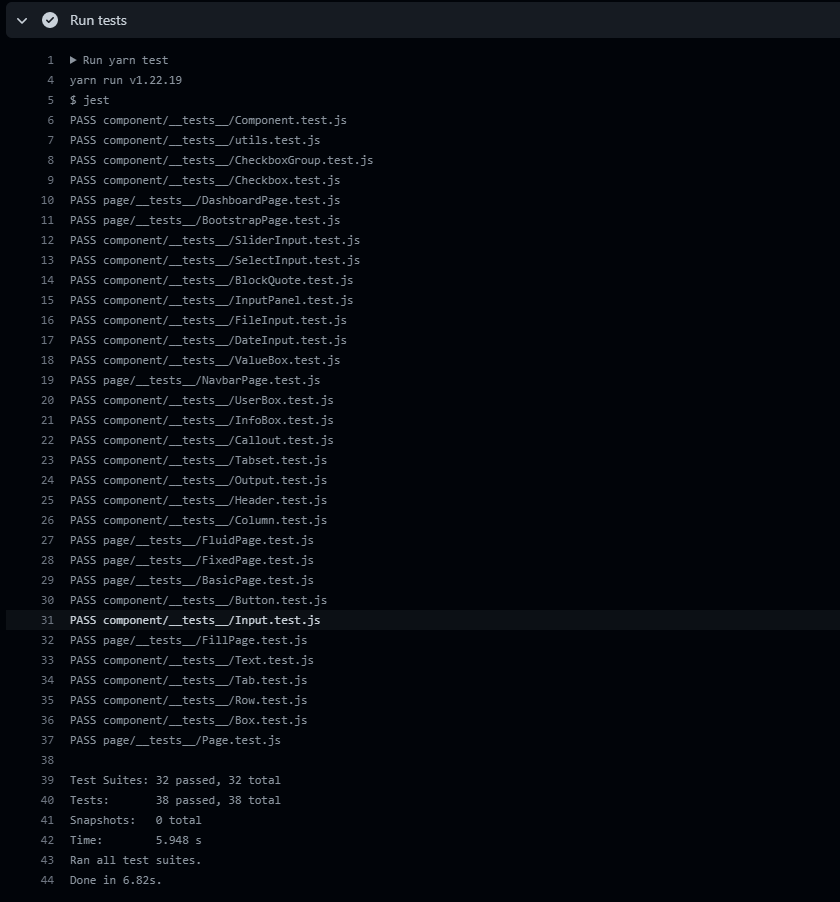

Creating a JavaScript Library for your Shiny Application
Ashley Baldry
Shiny & JavaScript
{shiny} + JS =❤️tags$script(HTML("
$(document).ready(function() {
$('[data-toggle="tooltip"]').tooltip()
})
"))<script src="path/to/javascript.js"></script>- 🤷
Motivation

Demo of the 0.1.0 designer application
Motivation
JavaScript structure of 0.1.0 release
- Adding more components made the code harder to read
- Lots of duplicated code that could be simplified
Library Set-Up
- Choose your IDE of choice
- Create a directory in your project for JS code
- Don’t forget to add the folder to
.Rbuildignore!
- Don’t forget to add the folder to
- Download and install Node.js
- Open your directory up in your IDE
- Run
npm initin the terminal to createpackage.json
Example package.json
{
"name": "designer",
"version": "0.2.0",
"description": "JS for designer app",
"main": "index.js",
"scripts": {
"test": "jest"
},
"author": "Ashley Baldry",
"license": "MIT"
}- “main” is the entry point of the library
- “scripts” is a list of commands that can be used in the terminal
- Dependency package commands can be used, or
node file.jsto run likeRscript file.R
- Dependency package commands can be used, or
Dependency Management
- Node.js includes a package manager,
npm, within its installation- This works like {renv}, including a lock file within the project
- Include jquery and shiny as dependencies
npm install jquery@3.6.0npm install github:rstudio/shiny
Important
Create a .gitignore in your JavaScript directory and include node_modules
Example package.json
Communication Between Files
- JavaScript files work in a modular fashion
- Only exported objects are accessible in other modules
- Objects have to be explicitly imported before use
Class Inheritance
- A way to reduce duplicated code
// component/Component.js
export class Component {
html = '<div></div>'
constructor = {
// runs when class is created
}
}
// component/Button.js
import Component from 'Component'
class Button extends Component {
html = '<button ...>...</button>'
constructor = {
// runs Component constructor
super()
}
}Bundling
import { build } from 'esbuild'
build({
entryPoints: ['index.js'],
bundle: true,
sourcemap: true,
outfile: '../inst/app/www/designer.min.js',
platform: 'node',
minify: true
}).catch(
() => process.exit(1)
)npm install esbuild --save-dev--save-devmeans that we only want the library for development purposes
- Include a source map to help debug errors in console
Example package.json
{
"name": "designer",
"version": "0.2.0",
"description": "JS for designer app",
"main": "index.js",
"scripts": {
"test": "jest",
"build": "node build.js"
},
"author": "Ashley Baldry",
"license": "MIT",
"dependencies": {
"@types/rstudio-shiny": "github:rstudio/shiny",
"jquery": "^3.6.0"
},
"devDependencies": {
"esbuild": "^0.17.7"
}
}Linting
- VS Code extensions
- eslint
Example package.json
{
"name": "designer",
"version": "0.2.0",
"description": "JS for designer app",
"main": "index.js",
"scripts": {
"test": "jest",
"build": "node build.js"
},
"author": "Ashley Baldry",
"license": "MIT",
"dependencies": {
"@types/rstudio-shiny": "github:rstudio/shiny",
"jquery": "^3.6.0"
},
"devDependencies": {
"esbuild": "^0.17.7",
"eslint": "^8.0.1"
}
}Unit Testing
npm install --save-dev jest
// component/Button.js
import Component from 'Component'
class Button extends Component {
html = '<button ...>...</button>'
constructor = {
// runs Component constructor
super()
}
}
// component/__tests__/Button.test.js
import { Button } from '../Button'
test('sanity test - button constructs successfully', () => {
const button = new Button()
expect(button.html).toBe('<button ...>...</button>')
})Example package.json
{
"name": "designer",
"version": "0.2.0",
"description": "JS for designer app",
"main": "index.js",
"scripts": {
"test": "jest",
"build": "node build.js"
},
"author": "Ashley Baldry",
"license": "MIT",
"dependencies": {
"@types/rstudio-shiny": "github:rstudio/shiny",
"jquery": "^3.6.0"
},
"devDependencies": {
"esbuild": "^0.17.7",
"eslint": "^8.0.1",
"jest": "^29.3.1"
}
}Continuous Integration (CI)
Include JavaScript unit tests as part of your GitHub Actions
CI Results

JavaScript unit test results of the {designer} package
Test Suites: 32 passed, 32 total
Tests: 38 passed, 38 total
Snapshots: 0 total
Time: 5.948 s
Ran all test suites.
Done in 6.82s.Finished Result

JavaScript structure of dev branch